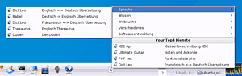
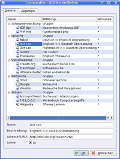

KlipOQuery
Archivierte Anleitung
Dieser Artikel wurde archiviert, da er - oder Teile daraus - nur noch unter einer älteren Ubuntu-Version nutzbar ist. Diese Anleitung wird vom Wiki-Team weder auf Richtigkeit überprüft noch anderweitig gepflegt. Zusätzlich wurde der Artikel für weitere Änderungen gesperrt.
Dieser Artikel wurde für die folgenden Ubuntu-Versionen getestet:
Dieser Artikel ist mit keiner aktuell unterstützten Ubuntu-Version getestet! Bitte diesen Artikel testen und das getestet-Tag entsprechend anpassen.
Hinweis:
Da es kein deb-Paket für diese Anwendung gibt, müssen die Quellen kompiliert werden. Die Anwendung ist seit Juni 2005 nicht weiterentwickelt. Es liegt allerdings eine Mail der Programmautors vor, KlipOQuery zu plegen und auch auf KDE4 anzupassen.
Zum Verständnis dieses Artikels sind folgende Seiten hilfreich:
KlipOQuery ist ein Miniprogramm für die Kontrollleiste und stellt eine Verbindung zwischen Klipper und beliebigen Webseiten her. KlipOQuery reicht den aktiven Inhalt der Zwischenablage an eine Webseite weiter. Das können z.B. Wörterbücher, Suchmaschinen, Enzyklopädien oder sonstige Nachschlagedienste sein. Auf Informationen kann zugegriffen werden, indem ein Text in einer beliebigen Anwendung markiert und das KlipOQuery-Icon in der Kontrollleiste angeklickt wird. Im Standardbrowser werden Informationen der gewählten Website zu dem markierten Begriff angezeigt.
KlipOQuery bietet optional eine Konfigurationsdatei an, in der von deutschen Anwendern häufig genutzte Internetdienste vorkonfiguriert sind. Diese Konfigurationsdatei ist über eine grafische Oberfläche editierbar.
Installation¶
Folgendes Paket muss installiert [1] sein:
kdebase-dev
Danach sind folgende Schritte durchzuführen:
Herunterladen des Quellpakets und der "German Services" (Konfigurationsdatei) von http://www.michael-vonrueden.de/klipoquery

Entpacken des Quellpakets [2]
tar -xzf klipoquery-0.2.4.tar.gz
Nun die Anwendung bauen [4], dazu sind folgende Befehle in einem Terminal [3] einzugeben:
cd klipoquery-0.2.4 ./configure --prefix=/usr/lib/kde3/ make sudo make install sudo ln -s /usr/lib/kde3/lib/libklipoquery.so /usr/lib/kde3/libklipoquery.so sudo ln -s /usr/lib/kde3/lib/libklipoquery.la /usr/lib/kde3/libklipoquery.la sudo ln -s /usr/lib/kde3/share/apps/kicker/applets/klipoquery.desktop /usr/share/apps/kicker/applets/klipoquery.desktop
Die Konfigurationsdatei für "German Services" de_webkliprc.tar.gz entpacken und die darin enthaltene Datei webkliprc als klipoqueryrc im Verzeichnis ~/.kde/share/config speichern.
tar -xzf de_webkliprc.tar.gz mv webkliprc ~/.kde/share/config/klipoqueryrc
Die ebenfalls entpackte README-Datei kann gelöscht werden.
Kontextmenü der Kontrollleiste -> Miniprogramm hinzufügen und das Miniprogramm auswählen.
Benutzung¶
 Ist Klipper aktiv und wird ein Text markiert, so kann mit einem Klick auf das KlipOQuery-Icon in der Kontrollleiste mit dieser Zeichenfolge zu dem zu Letzt verwendeten Internetdienst verzweigt werden. Soll ein anderer Dienst verwendet werden, kann dieser über das Kontextmenü ausgewählt werden.
 Die zu verwendenden Internetdienste können mit einem Klick auf den kleinen Konfigurationspfeil des Miniprogramms editiert werden. Er erscheint der abgebildete Konfigurationsdialog, in dem Dienste per Rechtsklick hinzugefügt, geändert oder gelöscht werden können. Ebenfalls ist es möglich Dienste in Gruppen zusammenzufassen. Diese Gruppen können ebenfalls hinzugefügt, geändert oder gelöscht werden.
Funktionsübersicht¶
Informationen zu einem markierten Text aus jeder beliebigen Anwendung mit nur einem Klick
Editierbarkeit der zu nutzenden Internetdienste
Gruppierung der Dienste in Kategorien
Häufig genutzte Dienste werden bewertet und bevorzugt angeboten
Der zu nutzende Dienst kann über das Kontextmenü des Icon in der Kontrollleiste gewechselt werden
- Erstellt mit Inyoka
-
 2004 – 2017 ubuntuusers.de • Einige Rechte vorbehalten
2004 – 2017 ubuntuusers.de • Einige Rechte vorbehalten
Lizenz • Kontakt • Datenschutz • Impressum • Serverstatus -
Serverhousing gespendet von